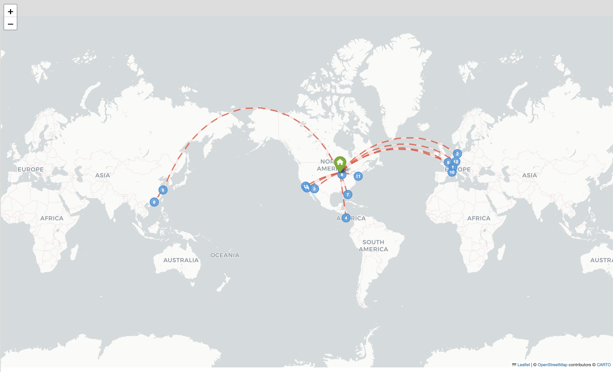
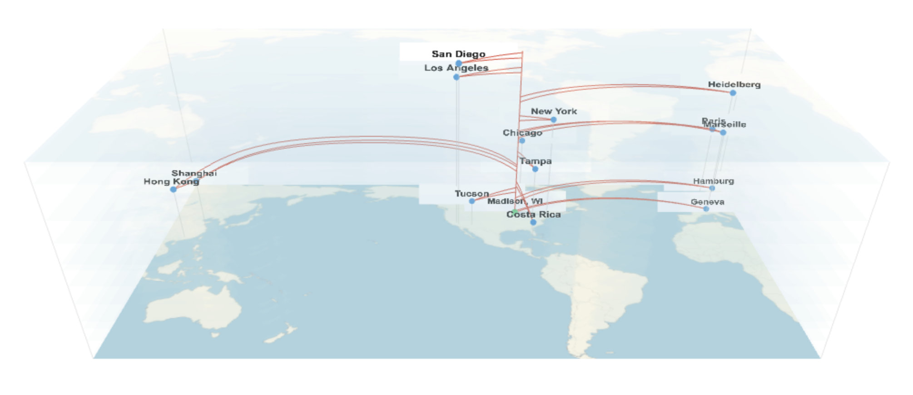

Pins
Clean, modern map with colored markers at each location. Simple and effective for showing visited places.
Arcs

Location pins connected by curved great-circle arcs. Inspired by Facebook check-in style maps.
Indiana Jones
Vintage/sepia styled map with red dotted flight paths. Inspired by the classic movie travel sequences.
Worldline 3D New

Interactive 3D spacetime visualization using Three.js. Shows travel as worldlines through space and time. Hover over cities to highlight trips, double-click to select.